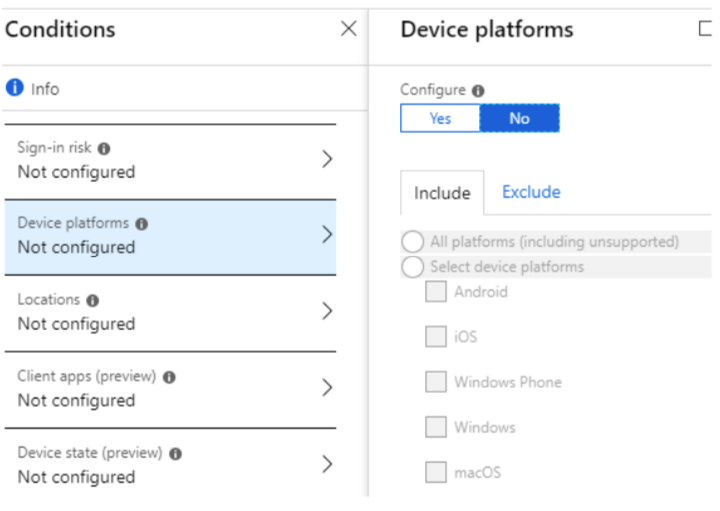
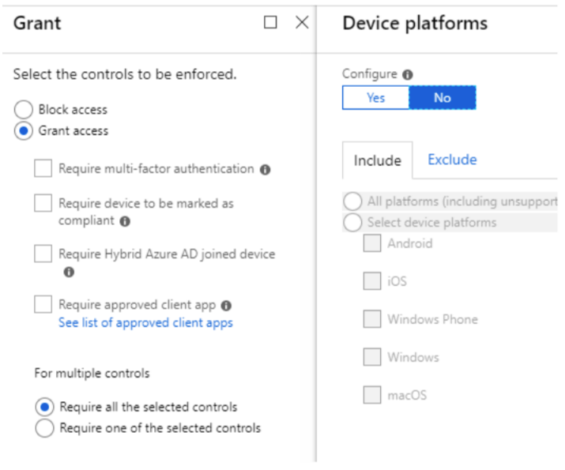

Conditional Access Policies
*Please note that the slido poll results shown later are from the clinic which took place on Friday 18th July 2021
Agenda
Conditional Access Policies
What are Conditional Access Policies
Why are Conditional Access Policies important
Benefits & Considerations
Typical Policy Implementations
Subscription Level Information
Interaction with Intune
Further Information
SLIDO 1
Do you use Conditional Access policies (25 votes in total)
Yes - Corporate Devices = 80%
Yes - BYOD 28%
No - 16%
What are Conditional Access Policies ?
Conditional Access policies at their simplest are “if-then” statements, if a user wants to access a resource, then they must complete an action.
Azure Active Directory (Azure AD) Conditional Access analyses ‘signals’ such as user, device, and location to automate decisions and enforce organizational access policies for resource. You can use
Conditional Access policies to apply access controls like Multi-Factor Authentication (MFA).
Conditional Access policies allow you to prompt users for MFA when needed for security, and stay out of users’ way when not needed.

Why are CAPs important
In essence - with Conditional Access, you can control the devices and apps that can connect to your email and company resources.
By their nature, CAP’s only allow access if certain conditions are met first.
They add an extra layer of security and also can extend out to assist compliance in other areas (such as operating system versions and patching levels).
Conditional Access is an Azure Active Directory capability that is included with an Azure Active Directory Premium license.
Benefits of deploying Conditional Access
Increase productivity. Only interrupt users with a sign-in condition like MFA when one or more signals warrants it. Conditional Access policies allow you to control when users are prompted for MFA, when access is blocked, and when they must use a trusted device.
Manage risk. Automating risk assessment with policy conditions means risky sign-ins are at once identified and remediated or blocked. Coupling Conditional Access with Identity Protection, which detects anomalies and suspicious events, allows you to target when access to resources is blocked or gated.
Address compliance and governance. Conditional Access enables you to audit access to applications, present terms of use for consent, and restrict access based on compliance policies.
Manage cost. Moving access policies to Azure AD reduces the reliance on custom or on-premises solutions for Conditional Access, and their infrastructure costs.
Control. Conditional Access policies allow you to control when users are prompted for MFA, when access is blocked, and when they must use a trusted device
Refer to https://docs.microsoft.com/en-us/azure/active-directory/conditional-access/overview for more information on CAP
SLIDO 2
What is the reason why you are not able to implement CAP’s ? (27 votes in total)
Cost Implications - 4%
Perceived complexity - 7%
No need for them - 0%
We already use them - 89%
Considerations
Before deploying Conditional Access Policies there are certain things you should consider:
What you want to achieve.
Clearly define what you want to do
Define the policies to achieve this
Licensing implications CAP implementation level will vary depending on what version / combination of Microsoft 365 Services you are running. Some conditional access features are part of Microsoft 365 Business packages, more features run with Azure AD Premium P1. To fully leverage CAP Azure AD Premium P2 is required.
Ref:
https://docs.microsoft.com/en-us/azure/active-directory/conditional-access/plan-conditional-access
https://docs.microsoft.com/en-us/azure/active-directory/conditional-access/concept-conditional-access-policy-common
Typical policies implemented
Blocking Access by Location
Blocking risky sign-in behaviors
Blocking Legacy Authentication
Clients that don’t use modern authentication (for example, an Office 2010 client).
Any client that uses older mail protocols such as IMAP, SMTP, or POP3.
Requiring MFA
Requiring a compliant device
Blocking Access except for Specific Applications
Requiring organization-managed devices for specific applications
Sign-in risk-based Conditional Access (Requires Azure AD Premium P2)
User risk-based Conditional Access (Requires Azure AD Premium P2)
Requiring trusted location for MFA Registration
Requiring multi-factor authentication for users with administrative roles
Base CAP Policies
Azure Active Directory (AD) Conditional Access policies are available with Microsoft 365 Business subscriptions. Even with a regular Azure AD, four Conditional Access preview policies are available. With a qualifying Azure subscription, you can create your own Conditional Access Policies (recommended)
Blocking Legacy Authentication - this policy blocks access to: clients that don’t use modern authentication (for example, an Office 2010 client), and any client that uses older mail protocols such as IMAP, SMTP, or POP3.
Requiring MFA for Admins - this policy requires the mandatory use of MFA for some administrative roles
End user protection - this policy enables the use of MFA for users (the user must complete the MFA registration via the Microsoft Authenticator app within 14 days after the first login)
Require MFA for service management - this policy gives you the MFA requirement for users to sign in to services based on the Azure Resource Manager API (Azure Portal, Azure CLI, PowerShell)
SLIDO 3
What areas would you like to use CAP for ? (27 votes in total)
Geographical Security - 56%
MFA - 67%
Compliant Devices - 59%
Blocking Legacy Authentications - 56%
Administative Logons - 56%
Other/All - 44%
Conditional Access and Intune
This section gives a high level overview of the interaction between CAP and Intune.
If your organisation uses Intune with your Microsoft 365 configuration, you can leverage the combined features which includes Device Compliance and Mobile Application Management.
Conditional Access is an Azure Active Directory capability that is included with an Azure Active Directory Premium license. Intune enhances this capability by adding mobile device compliance and mobile app management to the solution.
https://docs.microsoft.com/en-us/mem/intune/protect/conditional-access
There are two types of conditional access with Intune:
Device-based conditional access
App-based conditional access.
You need to configure the related compliance policies to drive conditional access compliance at your organisation.
Conditional access is commonly used to do things like allow or block access to Exchange, control access to the network, or integrate with a Mobile Threat Defence solution.
https://docs.microsoft.com/en-us/mem/intune/protect/conditional-access
Specific ways to use Conditional Access with Intune:
Device-based Conditional Access
Conditional Access for Exchange on-premises
Conditional Access based on network access control
Conditional Access based on device risk
Conditional Access for Windows PCs
Corporate-owned
Bring your own device (BYOD)
App-based Conditional Access
https://docs.microsoft.com/en-us/mem/intune/protect/conditional-access-intune-common-ways-use
Summary
Conditional Access Policies at their simplest are “if-then” statements, if a user wants to access a resource, then they must complete an action.
They add an extra layer of security and also can extend out to assist compliance in other areas
such as operating system versions and patching levels.
Conditional Access Policies can assist in giving increases in productivity, they assist in managing risk, help you work towards enforcing your compliance and governance, can help you control costs by removing reliance in on-premise systems, and they give you a better control of how access is granted.
A number of base CAP’s are already present in your M365 Console, but expanding out with Azure AD Premium License will allow you to implement their best practices.
Using with Intune as part of a device management strategy will further secure your network.
Microsoft Guide Videos
Microsoft have produced a series of video guides on how to work with Conditional Access:
There are several available, but a good starting point would be the following:
What is Conditional Access : https://www.youtube.com/watch?v=ffMAw2IVO7A
How to deploy Conditional Access : https://www.youtube.com/watch?v=c_izIRNJNuk
How to roll out Conditional Access : https://www.youtube.com/watch?v=0_Fze7Zpyvc
Questions from the Clinic (18/6/21) The following questions were raised during the clinic on 18th June and the answers below were included in the response to all attendees.
Q1. Any tips for Hybrid AAD joining Windows 2012R2 servers? We have had issues with our CA Policies as some servers are not AAD hybrid joined.
A1. Windows 2012 / R2 servers on Azure AD - there are a few 3rd party websites with details on this, but we would recommend migration to 2016/2019 in the current environment. Windows 2012 R2 does support only joining existing OnPremise AD. https://www.rebeladmin.com/2017/12/step-step-guide-connect-level-devices-azure-ad-hybrid-environment/ https://community.spiceworks.com/topic/2081613-is-there-a-way-to-join-a-server-2012-r2-system-to-an-azure-ad
Q2. Has anyone else come across the Good, Better, Best guide for unmanaged devices document for O365 produced by Microsoft and NCSC?
A2. https://cloudblogs.microsoft.com/industry-blog/en-gb/government/2021/04/14/updated-office-365-security-and-compliance-guidance-for-the-uk-public-sector/
Q3 If someone has multiple policies applied to them, how are they resolved? Do the policies merge resulting in the most restrictive settings?
A3. CA policies aren’t applied in any particular order. All matching policies apply and the resulting access controls required by the policies will be merged.
https://github.com/MicrosoftDocs/azure-docs/issues/22097
https://feedback.azure.com/forums/169401-azure-active-directory/suggestions/32320459-to-introduces-priorities-for-azure-ad-conditional
Appendix
The following gives an overview of how to build a simple CAP
Creating a Conditional Access Policy
This is a very basic guide in taking the first steps to creating a CAP.
Log into your tenant as an administrator and go to the Security > Conditional Access Policies section, then navigate to the Conditional Access ‘blade’

Then when in the ‘Conditional Access - Policies’ blade click on the ‘+ New policy’

Name your policy.
Now in the Assignments section of the panes, you now need to specify the conditions for applying the policy.
Proceed to set the scope of the application by selecting users and/or groups. These can be all users in Azure AD or specific groups/users. Exceptions can be specified separately.

In the Cloud Apps Assignment pane, select apps that you have previously registered with Azure AD (none, one or more are acceptable)

On the Conditions pane, you can now specify the ‘conditions’ which are needed to be satisfied to grant (or refuse) access.
Note : Sign in risk requires an Azure AD Premium P2 license.

In the Device platforms pane, specify which OS platform the policy is to apply to (or exclude)
The Locations pane allows you to select from the predefined (by yourself) list of trusted IP addresses.

In the Grant pane, you can select whether to block or allow (grant) access requests, or require additional security measures.
